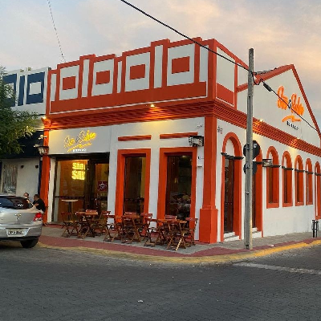
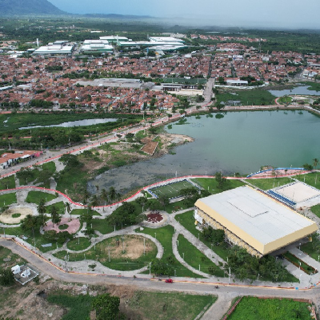

Um dos principais cartões postais da cidade, o Arco de Nossa Senhora de Fátima é um monumento
icônico em formato de arco do triunfo. Construído em 1953 para marcar a visita da imagem peregrina
de Nossa Senhora de Fátima, oferece opções de fotos, caminhadas e é rodeado por opções de
entretenimento. A região é de fácil acesso graças às diversas linhas de ônibus que passam pela
Avenida Dr. Guarany.
O Arco de Nossa Senhora de Fátima sempre é assunto. O que será que estão falando a respeito no
X?
Os bares do Centro de Sobral

Depois de um dia de trabalho, nada melhor do que um bom chopp, um petisco e uma conversa em uma mesa
de bar. Opções de sobra na região do centro, com lugares como PollGreen Irish Pub, São Salvo Boteco
e Villa Container.
Veja quais os melhores bares e restaurantes da região no
Tripadvisor.
A Lagoa da Fazenda

Um dos cartões postais da cidade, o Parque Ecológico da Lagoa da Fazenda dispõe de área verde, lago,
fontes, anfiteatro, playgrounds, quadra de areia, areninha e pistas para caminhada e corrida.
Requalificado recentemente, o parque é palco de lazer, eventos e observação de aves, integrando um
corredor verde na cidade.